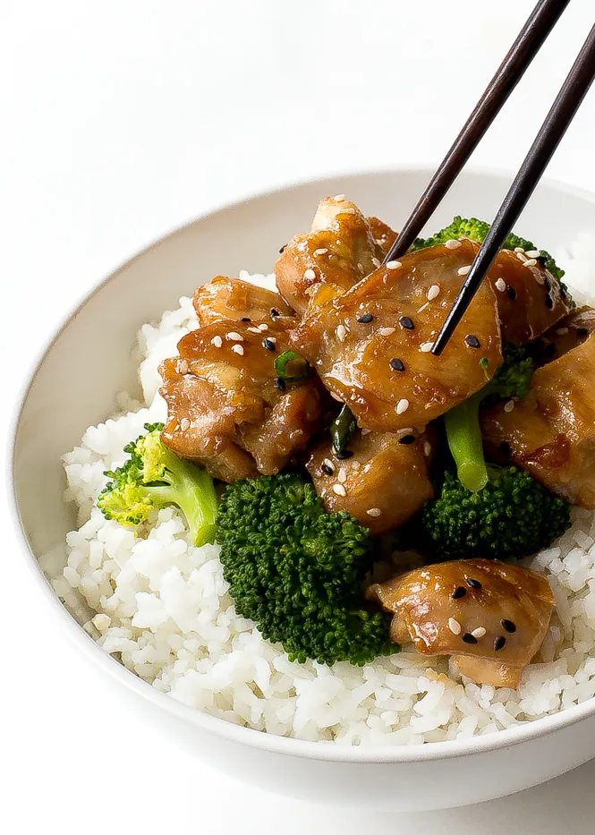

Teriyaki Chicken

About
These delicious teriyaki chicken wings are a hit at every party! I made 10 pounds of these wings for a recent get-together, and not one wing was left at the end of the night.
Ingredients
- 1 cup water
- 1 cup soy sauce
- 1 cup white sugar
- ¼ cup pineapple juice
- ¼ cup vegetable oil
- 1 tablespoon minced fresh garlic
- 1 tablespoon minced fresh ginger
- 3 pounds chicken wings or drumettes